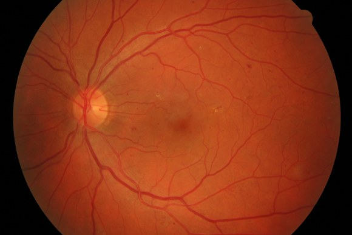
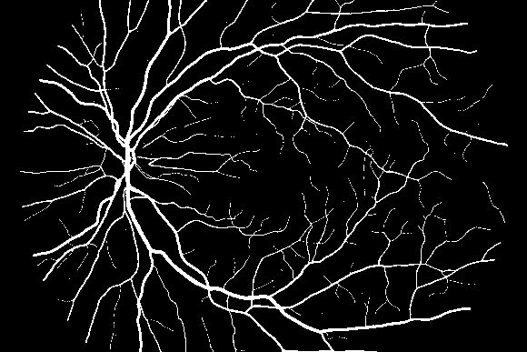
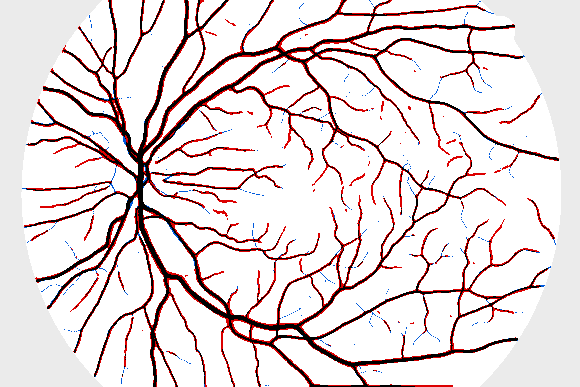
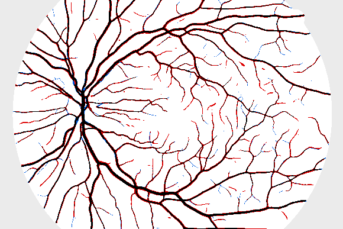

Parameters of the v2.1 model
66K
469 times smaller than the 31 M U-Net it is compared with, and 7 times smaller than our v2 model.
U-Net31.0 M
TG-LiteNet v2 (486K)0.49 M
TG-LiteNet v2.166 K
A pre-registered study of compact, topology-aware vessel segmentation. Trained on 15 DRIVE images, tested on four unseen datasets, and reported with every result, so you can see exactly what works and where it grows next.




469 times smaller than the 31 M U-Net it is compared with, and 7 times smaller than our v2 model.
models trained across v2 and v2.1
as INT8, with no change in Dice
Those numbers come from different protocols, so they are context rather than a ranking. Of our four new ideas one is clearly supported, and the paper reports what each of the four contributes.
See the four noveltiesHover or tap a panel. Each rebuild tightened the protocol, so that every setting is fixed before any target image is evaluated.
Each dot is a trained configuration (mean over seeds). Hover for details, click to pin.
These are the actual probability maps of six trained models on one image per dataset. Move the threshold and the fragment filter and watch the score and the number of broken pieces change.
Scores here use the networks' working resolution (the 540 px field of view), so they differ slightly from the paper's native-resolution tables. The starting Dice for each model matches results/v21/assets/assets.json.
Vessels on HRF look thin to a network trained at DRIVE's width. The rule runs each image at four scales, measures the vessel width the model predicts, and keeps the scale that matches what it saw in training. No labels, no retraining. It is strongest on thin vessels like HRF; on thick-vessel FIVES the default scale is already the better choice. Drag the handle to compare.
Scroll through them. One is supported and each of the others shows what to try next. With 3 seeds the tests have modest power, so a result that is not yet clear is an open question rather than a closed one.
Five stages, five seeds each. Switch the evaluation mode: raw is the threshold-0.5 headline, clean also deletes tiny fragments, tuned also picks the threshold on validation images.
The rule-selected 486K U-Net is about 31 times faster than the 31 M U-Net on CPU. Plain convolutions were the faster choice at equal accuracy.
Entropy is a helpful signal for flagging uncertain pixels (rho about 0.34). Ranking whole images by reliability is the next open challenge, and calibration fitted on DRIVE is a good target for cross-dataset work.
Every number on this page is generated from the per-run records in the repository, and the rules were hashed before any target was evaluated.
# set up (Windows, NVIDIA GPU)
pip install torch torchvision --index-url https://download.pytorch.org/whl/cu128
pip install -r requirements.txt
pip install -e .
pytest
# v2 study, then v2.1 (both resumable)
python scripts/run_all.py
python scripts/run_v21.py
python scripts/make_paper.py
python scripts/make_site_data.py